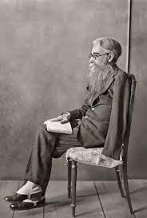

Esto es información de la página web de Daniel Manzanas sobre Html.
Intro a HTML
HTML boilerplate:
Es una plantilla HTML, CSS y JavaScript para crear sitios web HTML5 con compatibilidad entre navegadores. Esta es su estrcutura:
< !DOCTYPE html>
< html>
< head>
< meta charset="utf-8">
< title>Made with Thimble< /title>
< /head>
< body>
< /body>
< /html>
h1 to h6:
De h1 a h6 sirve para variar entre distintos tamaños el texto, siendo h1 el más grande.
Como el título de esta sección que esta en h1.
br:
Produce un salto de línea en el texto.
Ahora mismo esto que lees esta en otra línea gracias a haber usado br.
em:
Para marcar en cursiva las partes importantes de un texto.
Se suele escribir en cursiva para obras literarias como "Luces de bohemia" de Valle-Inclán.
strong:
Para marcar en negrita las partes más importantes de un texto.
ul,ol,li:
- ul: Listado sin numerado.
- ol: Listado numerado.
- li: Comando de listado que declara cada uno de los elementos de una lista
img:
Representa una imagen en el documento.
Su comando es: img src="url" alt="x" width="x"

Valle-Inclán
Poeta y novelista español, que formó parte de la corriente literaria denominada modernismo. Se le considera uno de los autores clave de la literatura española del siglo XX.
Autor del modernismo que destacó en el genero teatral.
Varias de sus obras destacadas son:
- Águila de blasón (1907)
- La marquesa Rosalinda (1912)
- Luces de Bohemia (1920)
